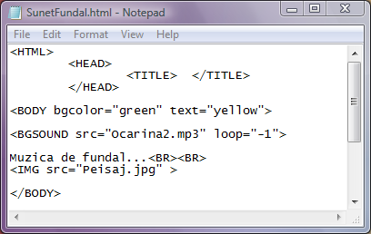

Sunete
In sectiunea despre Legaturi am vazut ca dintr-o pagina web poate fi lansat in executie un fisier
audio cu ajutorul etichetei A si a atributului href care are ca valoare adresa fisierului audio.
Acest fisier va fi deschis daca pe computerul client este instalat playerul necesar.
In ceea ce urmeaza vom arata modul in care o melodie poate fi setata ca sunet de fundal
al paginii web.
Pentru ca vizitarea paginii web sa fie insotita de un fundal muzical se foloseste eticheta
fara pereche BGSOUND (background sound - sunet de fundal). Atributele acestei etichete vor
stabili ce fisier audio va fi executat si de cate ori se va repeta executarea lui.
Cele doua atribute ale etichetei BGSOUND sunt:
a) src="adresa_fisier_audio" - rolul acestui atribut este de a seta fisierul audio care
va fi executat.
b) loop="n" - rolul acestui atribut este de a seta numarul repetari a executiei
fisierului audio. Astfel, n poate fi un numar pozitiv ce va insemna numarul de repetari. Daca
i se atribuie lui n valoarea "-1" sau "infinite" atunci fisierul va fi executat pana cand
utilizatorul paraseste pagina web.
Iata si un exemplu de pagina web cu o melodie de fundal care se va repeta pana la inchiderea
paginii web:

Click pe cod pentru a deschide pagina web.